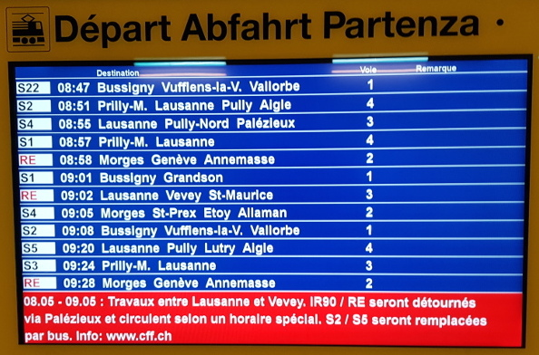

Tableaux¶
Un tableau est une structure en deux dimensions, avec des lignes et colonnes.
En Python, un tableau est une liste de listes.

La photo montre le tableau des départs de trains, prises le matin à la gare de Renens. Le tableau affiche 12 trains qui vont partir prochainement.
Un horaire de train¶
Un horaire CFF est un tableau. Chaque ligne de ce tableau représente un train. Chaque train a les caractéristiques suivantes :
type
heure de départ
gare de destination
voie
Tous les trains de la journée ne peuvent pas tous être affichés en même temps.
En informatique, on parle d’un tableau 2D ou tableau à deux dimensions. Chaque colonne représente les caractéristiques d’un train (type, heure de départ, destination, etc..) et chaque ligne représente un train.
Création d’une liste¶
Une liste est un ensemble d’objets. En Python une liste
est délimitée par des crochets
[], etses éléments sont séparés par une virgule
,
Chaque train est une liste qui possède autant d’éléments qu’il y a de caractéristiques dans l’horaire, séparées par une virgule ,
train1 = ['S22', '8h47', 'Vufflens-la-Ville', 1]
train2 = ['S2', '8h51', 'Aigle', 4]
train3 = ['S4', '8h55', 'Palézieux', 3]
Exercice
Définissez la liste train4 selon l’horaire dans l’image ci-dessus.
Création d’un tableau 2D¶
En Python, il n’existe pas de structure de donnée de type tableau. On le construit avec des listes. Un tableau 2D est une liste de liste. L’horaire devient une liste de listes.
horaire = [train1, train2, train3]
horaire
[['S22', '8h47', 'Vufflens-la-Ville', 1],
['S2', '8h51', 'Aigle', 4],
['S4', '8h55', 'Palézieux', 3]]
Exercice
Ajoutez train4 à l’horaire.
Accès aux éléments¶
On peut accéder une ligne du tableau par son indice.
Un indice est un nombre entier entre crochets [].
En Python, les indices commencent avec 0.
L’indice [0] désigne donc la première ligne et l’indice [1] désigne la deuxième ligne.
La deuxième ligne du tableau 2D horaire est horaire[1], et c’est aussi une liste
horaire[1]
['S2', '8h51', 'Aigle', 4]
On accède de même aux éléments de la ligne horaire[1]
L’élément horaire[1][2] correspond au troisième élément de la liste horaire[1], donc la destination
horaire[1][2]
'Aigle'
Exercice
Accédez à l’heure du départ du troisième train dans le tableau.
Accéder à une plage¶
On peut accéder à une plage d’éléments. La plage entre le premier et le deuxième élément s’écrit horaire[0:2]
horaire[0:2]
[['S22', '8h47', 'Vufflens-la-Ville', 1], ['S2', '8h51', 'Aigle', 4]]
Avec une boucle for nous pouvons itérer sur la liste et afficher les trains ligne par ligne.
for train in horaire[0:2]:
print(train)
['S22', '8h47', 'Vufflens-la-Ville', 1]
['S2', '8h51', 'Aigle', 4]
Exercice
Affichez les lignes 3-4 de l’horaire.
Longueur d’un tableau¶
La fonction len(list) retourne la longueur d’une liste
len(horaire)
3
La longueur de l’une ligne du tableau 2D est retourné avec:
len(horaire[0])
4
Ajouter un élément¶
On peut ajouter une nouvelle ligne à la fin avec la fonction list.append() :
train5 = ['RE', '8h58', 'Annemasse', 2]
horaire.append(train5)
horaire
[['S22', '8h47', 'Vufflens-la-Ville', 1],
['S2', '8h51', 'Aigle', 4],
['S4', '8h55', 'Palézieux', 3],
['RE', '8h58', 'Annemasse', 2]]
On peut ajouter une nouvelle ligne à la position i avec la fonction list.insert(i, element)
train6 = ['S1', '8h57', 'Lausanne', 4]
horaire.insert(3, train6)
horaire
[['S22', '8h47', 'Vufflens-la-Ville', 1],
['S2', '8h51', 'Aigle', 4],
['S4', '8h55', 'Palézieux', 3],
['S1', '8h57', 'Lausanne', 4],
['RE', '8h58', 'Annemasse', 2]]
Enlever des éléments¶
On peut enlever des éléments avec les méthodes suivantes :
list.remove(x)si l’élémentxexistelist.pop()le dernier élémentlist.clear()tous les éléments
On enlève l’élément train5 :
horaire.remove(train5)
horaire
[['S22', '8h47', 'Vufflens-la-Ville', 1],
['S2', '8h51', 'Aigle', 4],
['S4', '8h55', 'Palézieux', 3],
['S1', '8h57', 'Lausanne', 4]]
On peut enlever le dernier élément avec la méthode list.pop()
horaire.pop()
horaire
[['S22', '8h47', 'Vufflens-la-Ville', 1],
['S2', '8h51', 'Aigle', 4],
['S4', '8h55', 'Palézieux', 3]]
On efface tous les éléments avec la méthode list.clear(). La variable horaire est maintenant une liste vide.
horaire.clear()
horaire
[]
Exercice¶
Voici votre horaire de départ.
horaire = [train1, train2, train3, train6, train5]
horaire
[['S22', '8h47', 'Vufflens-la-Ville', 1],
['S2', '8h51', 'Aigle', 4],
['S4', '8h55', 'Palézieux', 3],
['S1', '8h57', 'Lausanne', 4],
['RE', '8h58', 'Annemasse', 2]]
Ajoutez à l’horaire le régional S1 pour Bussigny qui part à 9h01 sur voie 1
Il est 8h50, le régional S22 pour Bussigny et Vufflens-la-Ville est parti. Supprimez-le de l’horaire
Un dérangement sur la ligne de contact entre Vevey et Lausanne provoque un retard de 20 minutes. Ajoutez cette information pour le RE de 8h58 pour Annemasse
Pour l’affichage de quai, sélectionnez tous les trains qui partiront de voie 4